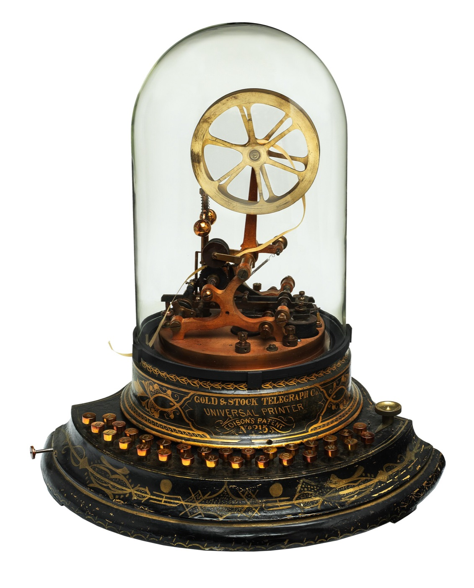

Marketbar
A free market terminal for your Mac's menu bar, with after-hours moves kept apart from the trading day.
- NVDA60 sh181.20+1.40%
- AAPL40 sh231.40+1.00%
- MSFT18 sh452.10−0.48%
- VOO25 sh551.30+0.49%
- BTC0.0596,400+1.37%
Four sessions, kept apart
From 9:30 to 4 the menu bar and the dropdown agree: NVDA is up 1.40% on yesterday's close, refreshed every 5 seconds.
What's in it
Your money
The market
Research
| Portfolio | Value | Today |
|---|---|---|
| Growth | $48,612.40 | +0.69% |
| Income | $21,930.55 | +0.12% |
| Long term | $12,404.18 | −0.21% |
| Date | Trade | Price |
|---|---|---|
| Mar 3 | Buy 40 | $120.50 |
| Jun 12 | Buy 30 | $141.20 |
| Oct 2 | Sell 10 | $176.00 |
| Portfolio | Sharpe | Return | Volatility |
|---|---|---|---|
| Growth | 1.42 | 34.2% | 21.3% |
| Income | 0.88 | 11.8% | 8.9% |
| Long term | 1.05 | 19.4% | 14.7% |
Running in two minutes
Marketbar is signed but not notarized, because notarizing needs a paid Apple developer account. macOS asks you to confirm it once, and then it opens like any other app.
Prefer to skip that step? Build it yourself. Macs don't quarantine apps built on them.
git clone https://github.com/noamsmall18/barista.git
cd barista
./build-app.sh marketbar --installDownload
- Marketbar-1.2.0.zip9.9 MB
- Unzip, drag to Applications10 sec
First launch
- Open it; macOS stops it onceonce
- Privacy & Security, Open Anyway20 sec
Set up
- Add tickers or a portfolio1 min
The market in your menu barabout 2 min
Questions
PriceIs it really free?
Yes. No account, no ads, no paid tier. The code is MIT-licensed on GitHub, so you can read every line, change it or build it yourself.
DataWhere do the prices come from?
Free public sources: Yahoo Finance for stock quotes and charts, Robinhood's public 24/5 quotes for the overnight session, CoinGecko and Kraken for crypto, and SEC filings for research. There are no API keys to set up.
PrivacyDoes my portfolio leave my Mac?
No. Marketbar has no account, no server of its own and no tracking. Portfolios, trades and history stay in files on your Mac; it only goes online to fetch market data.
SecurityWhy does macOS block the first launch?
Apple only waves through apps notarized with a paid developer account. Open Marketbar once, then choose Open Anyway in System Settings, Privacy & Security. Building from source skips the prompt.
MacsWill it run on my Mac?
On any Mac with macOS 13 Ventura or later, Apple silicon or Intel. The download is a single 9.9 MB app.
SpeedHow live are the prices?
Stocks refresh every 5 seconds while the market is open, or every 2 in Ultra-fast mode, and crypto streams around the clock. Free feeds can trail the exchanges, so treat it as a watcher, not a trading screen.
Put the market in your menu bar
Free and open source. 9.9 MB. Asks once before its first launch.
